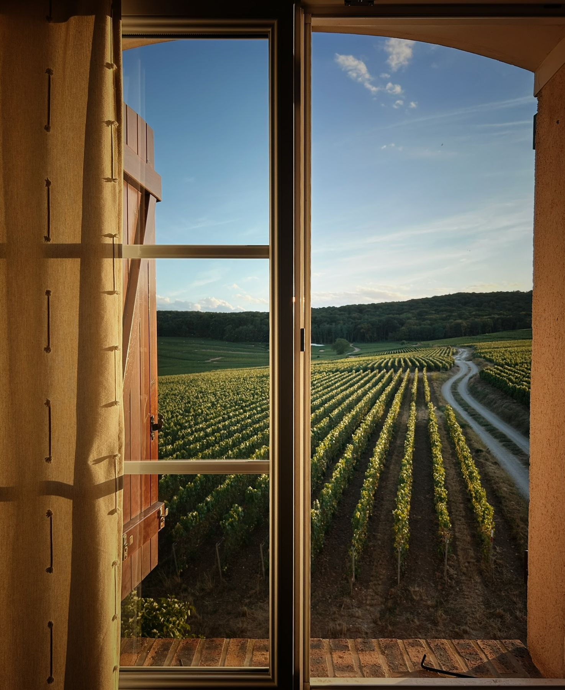

Faites glisser la carte pour vous déplacer, molette ou pincement pour zoomer, touches plus et moins au clavier. Chaque lieu numéroté ouvre une page du carnet ; la légende en donne la liste.

La vue que la famille a chaque matin, depuis une fenêtre de la maison.